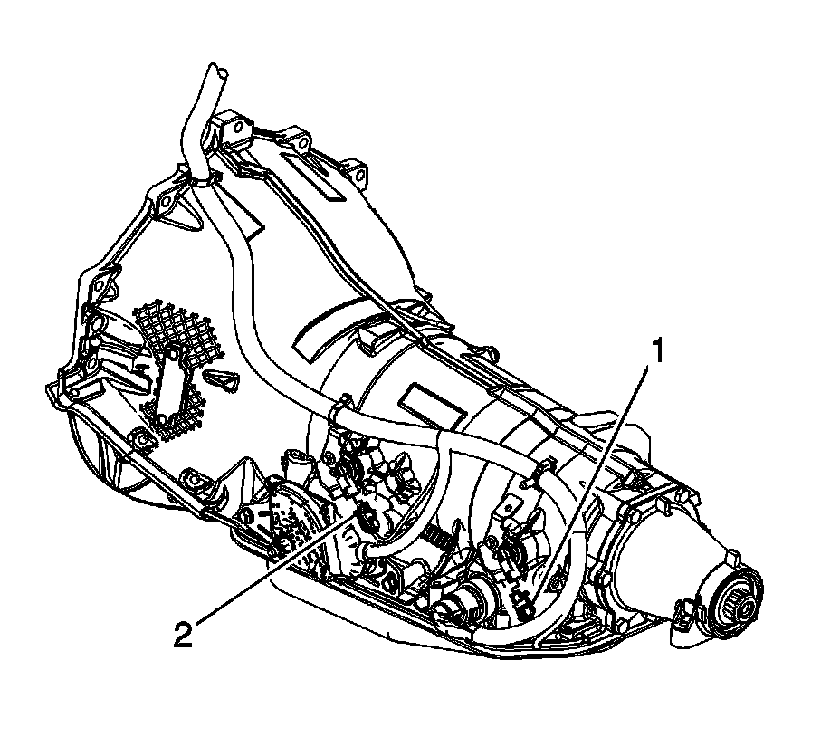
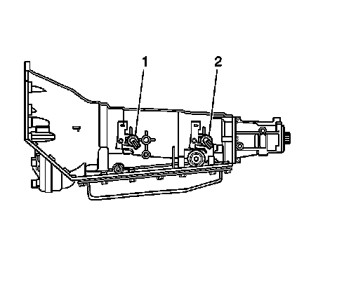

Output Shaft Speed Sensor Replacement
Output Shaft Speed Sensor Replacement
Removal Procedure
Important: This procedure is for 2-wheel drive (2WD) vehicles only. If the vehicle is equipped with 4-wheel drive (4WD), the output speed sensor is located on the transfer case.
1. Raise and suitably support the vehicle. Refer to Lifting and Jacking the Vehicle.

2. Disconnect the output speed sensor (1) electrical connector.

3. Remove the output speed sensor bolt.
4. Remove the output speed sensor (2).
5. Inspect the output speed sensor (2) for any evidence of damage.
Installation Procedure
1. Lubricate the output speed sensor seal with automatic transmission fluid.
2. Install the output speed sensor (2).
Notice: Refer to Fastener Notice.
3. Install the output speed sensor bolt.
Tighten the bolt to 11 N.m (96 lb in).
4. Connect the output speed sensor (1) electrical connector.
5. Lower the vehicle.